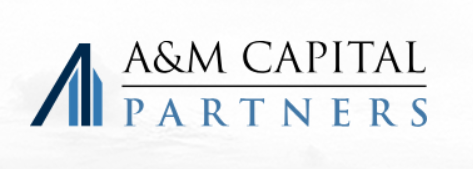

Built for A&M Capital's Multi-Strategy Model
A&M Capital's multi-strategy platform - four concurrent fund strategies, 170+ companies across 24 platforms, leveraging A&M Consulting's 9,500 operating professionals - demands execution partners who operate at institutional speed with operational precision. Our standardized frameworks and cross-deal analytics enable faster diligence cycles, support for parallel platform builds, and seamless coordination across AMCP, AMCS, AMCE, and AMCSI deal flows. No slowdowns. No iteration loops. No handoffs.
Recent Engagements
East Coast Power
Asurint
Allied Universal
ProAmpac
Operational Diligence at Platform Build Velocity
STOC Advisory delivers transaction execution built for A&M Capital's operational intensity and multi-platform deal velocity. In 2025 alone, we completed 200+ transactions supporting sponsors executing build-up strategies, operational transformations, and concurrent platform acquisitions requiring both speed and institutional rigor.
200+
Transactions
Completed in 2025
Completed in 2025
Build-Up
Expertise Across
Platform Add-Ons
Platform Add-Ons
Multi-Fund
Support Across
Concurrent Strategies
Concurrent Strategies
Operational
Diligence Aligned
with A&M Resources
with A&M Resources
01
Transaction Advisory (TAS)
Built for operational transformation deals
Standardized diligence frameworks purpose-built for carve-outs, operational turnarounds, and build-up platforms where A&M Consulting involvement is critical. Our process integrates with A&M's operational assessment methodology - 200+ transactions in 2025 enable pattern recognition across operational improvement scenarios, faster identification of value creation levers, and clean handoff to A&M's operating resources. We resolve normalization, working capital, and integration complexity before they become re-trade drivers or post-close surprises.
02
Corporate Development (CDS)
Platform build infrastructure
Scaled add-on identification and screening built for AMCP's 24-platform portfolio. Structured market mapping, repeatable target prioritization, and early underwriting conviction that supports aggressive build-out timelines. Our analytics distinguish strategic fits from financial fits - enabling faster platform expansion decisions and disciplined add-on sequencing across concurrent platform builds. Purpose-built for sponsors running 5-10 parallel acquisition programs simultaneously.
03
Growth Enablement (GES)
Integration planning aligned with A&M operational resources
Post-close support designed to complement A&M Consulting's operational transformation capabilities. We carry forward diligence models, assumptions, and financial frameworks - providing continuity from transaction close through operational stabilization. Integration planning coordinates with A&M's operating professionals, ensuring seamless handoff between transaction execution and operational value creation. Same analytical rigor, zero knowledge loss.
A&M Capital Engagements
East Coast Power
Asurint
[Your PortCo]
[Your PortCo]
[Your PortCo]
200+ completed transactions in 2025 alone supporting operational transformation, platform build-ups, and multi-strategy investment execution across business services, industrial services, healthcare, government services, financial services, and specialty distribution